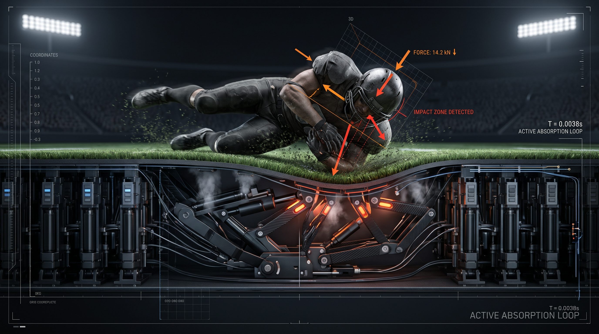

Real-World Athletic Applications
Scaling variable-porosity perimeter safety frameworks across premium commercial facilities and arenas.
Application 01

Skateparks
Absorbing high-impact concrete landing drops across public and commercial skate structures without altering deck rigidity.
Application 02
Football Grounds
Deploying subsurface turf field mitigation grids to eliminate high-velocity head-to-ground shock forces instantly.
